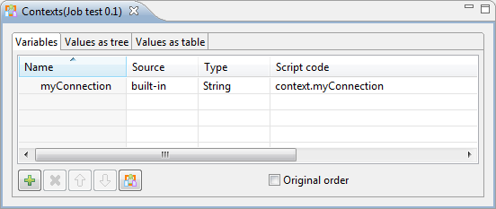
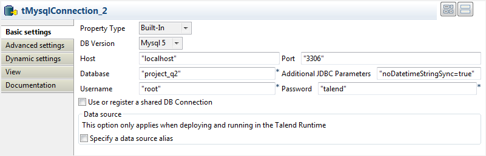
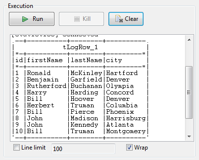

|
Famille de composant |
Databases/MySQL | |
|
Fonction |
Le composant tMysqlInput lit une base de données et en extrait des champs à l’aide de requêtes. | |
|
Objectif |
Le tMysqlInput exécute une requête en base de données selon un ordre strict qui doit correspondre à celui défini dans le schéma. La liste des champs récupérée est ensuite transmise au composant suivant via une connexion de flux (Main row). | |
|
Basic settings |
Property type | Peut être Built-in ou Repository. |
|
|
|
Built-in : Propriétés utilisées ponctuellement. |
|
|
|
Repository : Sélectionnez le fichier dans lequel sont stockées les propriétés du composant. Les champs suivants sont alors pré-remplis à l’aide des données collectées. |
|
|
|
Cliquez sur cette icône pour ouvrir l’assistant de configuration de connexion à la base de données et enregistrer les paramètres de connexion que vous avez définis dans la vue Basic settings du composant. Pour plus d’informations sur comment définir et stocker des paramètres de connexion de base de données, consultez le Guide utilisateur de Talend Data Integration Studio. |
|
|
Use an existing connection |
Cochez cette case et sélectionnez le composant de connexion adéquat à partir de la liste Component list pour réutiliser les paramètres d’une connexion que vous avez déjà définie. NoteLorsqu’un Job contient un Job parent et un Job enfant, si vous souhaitez utiliser une connexion existant entre les deux niveaux, par exemple pour partager la connexion créée par le Job parent avec le Job enfant, vous devez :
Pour plus d’informations concernant le partage d’une connexion à travers différents niveaux de Jobs, consultez le Guide utilisateur de Talend Data Integration Studio. |
|
|
Host |
Adresse IP du serveur de base de données. |
|
|
Port |
Numéro du port d’écoute du serveur de base de données. |
|
|
Database |
Nom de la base de données. |
|
|
Username et Password |
Informations d’authentification de l’utilisateur de base de données. |
|
|
Schema et Edit Schema |
Un schéma est une description de lignes, il définit le nombre de champs qui sont traités et passés au composant suivant. Le schéma peut être Built-in ou distant dans le Repository.
NoteCe composant offre la fonction de schéma dynamique. Cela vous permet de récupérer des colonnes inconnues de fichiers source ou de copier des lots de colonnes d’une source sans avoir à mapper chaque colonne individuellement. Pour plus d’informations concernant les schémas dynamiques, consultez le Guide utilisateur de Talend Data Integration Studio. |
|
|
|
Built-in : Le schéma sera créé et conservé pour ce composant seulement. Voir également le Guide utilisateur de Talend Data Integration Studio. |
|
|
|
Repository : Le schéma existe déjà et est stocké dans le Repository. Ainsi, il peut être réutilisé. Voir également le Guide utilisateur de Talend Data Integration Studio. |
|
|
Table Name |
Nom de la table à lire. |
|
|
Query type et Query |
Saisissez votre requête de base de données en faisant attention à ce que l’ordre des champs corresponde à celui défini dans le schéma. AvertissementSi vous utilisez la fonction de schéma dynamique, la requête SELECT doit inclure le caractère *, afin de récupérer toutes les colonnes de la table sélectionnée. |
| Specify a data source alias |
Cochez cette case et spécifiez l'alias de la source de données créée dans Talend Runtime pour utiliser le pool de connexions partagées défini dans la configuration des données source. Cette option fonctionne lorsque vous déployez et exécutez votre Job dans Talend Runtime. AvertissementSi vous utilisez la configuration de la base de données du composant, la connexion à votre source de données se ferme à la fin du composant. Pour empêcher la fermeture de la connexion, utilisez une connexion partagée à la base de données, avec l'alias de la source de données spécifié. Cette option est indisponible lorsque la case Use an existing connection est cochée. | |
|
Additional JDBC parameters |
Spécifiez des informations supplémentaires de connexion à la base de données créée. Cette option est disponible lorsque la case Use an existing connection est décochée dans les Basic settings. NoteLorsque vous devez traiter des données au format date/heure 0000-00-00 00:00:00 utilisant ce composant, définissez les paramètres comme suit :
| |
|
|
Enable stream |
Cochez cette case pour déterminer avec quelles lignes vous souhaitez travailler. Cette option permet d’améliorer les performances. |
|
|
Trim all the String/Char columns |
Cochez cette case pour supprimer les espaces en début et en fin de champ dans toutes les colonnes contenant des chaînes de caractères. |
|
|
Trim column |
Supprimez les espaces en début et en fin de champ dans les colonnes sélectionnées. NoteDécochez Trim all the String/Char columns pour activer le tableau Trim column. |
|
|
tStatCatcher Statistics |
Cochez cette case pour collecter les données de log au niveau du composant. |
|
Dynamic settings |
Cliquez sur le bouton [+] pour ajouter une ligne à la table. Dans le champ Code, saisissez une variable de contexte afin de sélectionner dynamiquement votre connexion à la base de données parmi celles prévues dans votre Job. Cette fonctionnalité est utile si vous devez accéder à plusieurs tables de bases de données ayant la même structure mais se trouvant dans différentes bases de données, en particulier lorsque vous travaillez dans un environnement dans lequel vous ne pouvez pas changer les paramètres de votre Job, par exemple lorsque votre Job doit être déployé et exécuté dans un Studio Talend indépendant. La table Dynamic settings n'est disponible que si la case Use an existing connection est cochée dans la vue Basic settings. Lorsqu'un paramètre dynamique est configuré, la liste Component List devient inaccessible dans la vue Basic settings. Pour plus d'informations concernant les Dynamic settings et les variables de contexte, consultez le Guide utilisateur Talend Data Integration Studio. | |
|
Utilisation |
Ce composant couvre toutes les possibilités de requête SQL dans les bases de données MySQL. | |
Dans ce scénario, vous allez lire des colonnes d’une base de données MySQL puis les écrire dans une table d’un fichier local de sortie.
Déposez un composant tMysqlInput et un tFileOutputDelimited de la Palette dans l’espace de modélisation graphique.
Reliez le tMysqlInput au tFileOutputDelimited à l’aide d’un lien Row > Main.

Double-cliquez sur le composant tMysqlInput afin d’ouvrir l’onglet Basic settings de la vue Component.

Avertissement
Dans Talend Open Studio for Big Data, les options Property type, Schema et Query Type des composants sont toujours en mode Built-in. Pour plus d'informations concernant l'édition d'un schéma Built-in, consultez le Guide utilisateur de Talend Data Integration Studio.
Dans la liste Property Type, sélectionnez Repository, si vous avez déjà stocké la connexion à la base de données dans le nœud Metadata du Repository. Les informations de connexion sont alors automatiquement renseignées.
Pour plus d’informations concernant le stockage des métadonnées dans le Repository, consultez le Guide utilisateur de Talend Data Integration Studio.
Si vous n’avez pas stocké localement la connexion dans le Repository, sélectionnez Built-In dans la liste Property Type puis renseignez manuellement les informations
Dans la liste Schema, sélectionnez Built-In. Cliquez sur Edit schema pour configurer le schéma.
L’éditeur du schéma s’ouvre :

Cliquez quatre fois sur le bouton
 pour ajouter quatre lignes au schéma.
pour ajouter quatre lignes au schéma.Dans les colonnes Column et Db Column, cliquez dans les champs afin de saisir le nom des colonnes correspondantes, id, first_name, city et salary, respectivement.
Cliquez sur les champs de la colonne Type pour définir le type de données.
Cliquez sur OK pour fermer l’éditeur du schéma.
A côté du champ Table Name, cliquez sur le bouton [...] pour sélectionner la table de la base de données souhaitée.
Une boîte de dialogue affiche une arborescence de toutes les tables dans la base de données sélectionnée :

Cliquez sur la table qui vous intéresse puis sur OK pour fermer la boîte de dialogue.
Dans la liste Query Type, sélectionnez Built-In.
Dans le champ Query, saisissez la requête permettant de récupérer les colonnes souhaitées de la table.

Double-cliquez sur le tFileOutputDelimited afin d’afficher sa vue Component.

A côté du champ File Name, cliquez sur le bouton [...] afin de parcourir votre système jusqu’à l’emplacement où vous souhaitez sauvegarder le fichier de sortie, puis saisissez un nom pour le fichier.
Cochez la case Include Header afin de récupérer le nom des colonnes du schéma ainsi que les données.
Sauvegardez le Job en appuyant sur les touches Ctrl+S.
Appuyez sur F6 pour exécuter votre Job.

Dans le fichier de sortie est écrit le nom des colonnes souhaitées et les données correspondantes, récupérés de la base de données :
Note
Le Job peut également être exécuté en mode Traces Debug, ce qui vous permet de voir les lignes pendant leur écriture dans le fichier de sortie, dans l’espace de modélisation graphique.
Dans ce scénario, une table d'une base de données MySQL est lue, à l'aide un paramètre de contexte référant au nom de la table.
Déposez un composant tMysqlInput et un tLogRow de la Palette dans l'espace de modélisation graphique.
Reliez le tMysqlInput au tLogRow à l'aide d'un lien Row > Main.

Double-cliquez sur le tMysqlInput pour ouvrir la vue Basic settings.

Avertissement
Dans Talend Open Studio for Big Data, les options Property type, Schema et Query Type des composants sont toujours en mode Built-in. Pour plus d'informations concernant l'édition d'un schéma Built-in, consultez le Guide utilisateur de Talend Data Integration Studio.
Dans la liste Property Type, sélectionnez Repository si vous avez déjà stocké la connexion à la base de données dans le nœud Metadata du Repository. Les champs des propriétés sont automatiquement renseignés.
Pour plus d'informations concernant le stockage d'une connexion à une base de données, consultez le Guide utilisateur de Talend Data Integration Studio.
Si vous n'avez pas configuré de connexion à une base de données dans le Repository, renseignez manuellement les informations après avoir sélectionné Built-in dans la liste Property Type.
Configurez le Schema en Built-In. Cliquez sur Edit schema pour définir le schéma comme vous le souhaitez.
L'éditeur du schéma s'ouvre :

Cliquez sur le bouton
pour ajouter les sept colonnes à utiliser pour
configurer le schéma et renommez-les respectivement :
id, first_name, last_name, city, state, date_of_birth et salary.Cliquez sur les lignes de la colonne Type pour définir le type des données.
Cliquez sur OK pour fermer l'éditeur du schéma.
Placez votre souris sur le champ Table Name et appuyez sur F5 pour configurer les paramètres de contexte.

Pour plus d'informations concernant les paramètres de contexte, consultez le Guide utilisateur de Talend Data Integration Studio.
Laissez les paramètres par défaut dans le champ Name et saisissez le nom de la table de la base de données dans le champ Default value, employees dans ce cas.
Cliquez sur Finish pour valider.
Le paramètre de contexte context.TABLE apparaît automatiquement dans le champ Table Name.
Dans la liste Query type, sélectionnez Built-In. Cliquez sur Guess Query pour obtenir l'instruction de la requête.
Dans ce scénario, lisez les enregistrements contenant un salaire supérieur à 8000. Ajoutez une clause
Where. L'instruction finale s'affiche comme suit :"SELECT "+context.TABLE+".`id`, "+context.TABLE+".`first_name`, "+context.TABLE+".`last_name`, "+context.TABLE+".`city`, "+context.TABLE+".`state`, "+context.TABLE+".`date_of_birth`, "+context.TABLE+".`salary` FROM "+context.TABLE+" WHERE "+context.TABLE+".`salary` > 8000"
Double-cliquez sur le tLogRow pour configurer ses propriétés de base dans l'onglet Basic settings.

Dans la zone Mode, sélectionnez Table (print values in cells of a table) pour un meilleur affichage des résultats.
Sauvegardez le Job.

Dans ce scénario, vous allez lire des données depuis des tables de bases de données ayant la même structure mais se trouvant dans deux différentes bases de données MySQL nommées respectivement project_q1 et project_q2. Vous allez spécifier dynamiquement les connexions à ces bases de données au moment de l'exécution, sans modifier le Job.
Déposez deux composants tMysqlConnection, un tMysqlInput, un tLogRow et un tMysqlClose dans l'espace de modélisation graphique.
Reliez le premier tMysqlConnection au second tMysqlConnection et le second tMysqlConnection au tMysqlInput à l'aide de liens Trigger > On Subjob Ok.
Reliez le tMysqlInput au tLogRow à l'aide d'un lien Row > Main.
Reliez le tMysqlInput au tMysqlClose à l'aide d'un lien Trigger > On Subjob Ok.

Afin de pouvoir choisir dynamiquement une connexion à la base de données au moment de l'exécution, vous devez définir une variable de contexte. Cette dernière est configurée dans les paramètres Dynamic settings du composant d'entrée de la base de données.
Dans la vue Contexts, sélectionnez l'onglet Variables. Cliquez sur le bouton [+] afin d'ajouter une ligne à la table et nommez-la, par exemple, myConnection.
Sélectionnez l'onglet Values as tree puis développez le nœud myConnection. Dans le champ Prompt, saisissez le message que vous souhaitez afficher à l'exécution et cochez la case située à côté du message que vous venez de saisir.

Dans le champ Value, saisissez le nom unique du composant que vous souhaitez utiliser en tant que composant de connexion par défaut, le tMysqlConnection_1 dans cet exemple.
Double-cliquez sur le premier composant tMysqlConnection afin d'afficher sa vue Basic settings et saisissez les informations de connexion. Pour plus d'informations concernant la configuration du tMysqlConnection, consultez la section intitulée « tMysqlConnection ».
Notez que ce composant sert à ouvrir une connexion à une base de données MySQL nommée project_q1.

Configurez le second composant tMysqlConnection de la même façon mais en saisissant project_q2 dans le champ Database. En effet, ce composant sert à ouvrir une connexion à une autre base de données MySQL, project_q2.
Double-cliquez sur le tMysqlInput afin d'ouvrir sa vue Basic settings.

Cochez la case Use an existing connection et laissez la case Component List comme elle est.
Cliquez sur le bouton [...] situé à côté du champ Edit schema afin d'ouvrir la boîte de dialogue [Schema]. Définissez la structure de la table de la base de données à partir de laquelle les données sont lues.

Dans cet exemple, la structure de la table de la base de données est composée de quatre colonnes : id (de type Integer et d'une longueur de 2 caractères), firstName (de type String et d'une longueur de 15 caractères), lastName (de type String et d'une longueur de 15 caractères) et city (de type String et d'une longueur de 15 caractères). Cliquez sur OK pour fermer la boîte de dialogue et propager le schéma au composant suivant.
Dans le champ Table, saisissez le nom de la table de la base de données, customers dans cet exemple. Cliquez sur Guess Query afin de générer l'instruction de la requête correspondant au schéma de votre table dans le champ Query.
Dans la vue Dynamic settings, cliquez sur le bouton [+] afin d'ajouter une ligne à votre table. Dans le champ Code, saisissez le code du script de la variable de contexte que vous venez de créer,
" + context.myConnection + "dans cet exemple.
Dans la vue Basic settings du tLogRow, sélectionnez l'option Table pour un meilleur affichage des résultats d'exécution du Job.

Dans la vue Dynamic settings du tMysqlClose, procédez de la même manière que dans la vue Dynamic settings du tMysqlInput.
Appuyez sur Ctrl+S pour sauvegarder votre Job. Appuyez sur F6 ou cliquez sur Run afin de l'exécuter.
Une boîte de dialogue s'affiche vous demander de spécifier le composant de connexion que vous souhaitez utiliser.

Afin d'utiliser le composant par défaut, cliquez sur OK.
Les données lues depuis la base de données project_q1 s'affichent dans la console Run.
Appuyez sur F6 ou cliquez sur Run afin d'exécuter le Job à nouveau. Quand la boîte de dialogue s'affiche, saisissez le nom de l'autre composant de connexion, à savoir tMysqlConnection_2, afin de lire les données depuis l'autre base de données, project_q2.
Les données lues depuis la base de données project_q2 s'affichent dans la console Run.

Avertissement
Ce scénario utilise la fonctionnalité de schéma dynamique, disponible uniquement pour les utilisateurs ayant souscrit à l'une des solutions Talend.
Dans ce scénario, vous allez lire des colonnes dynamiques d’une base de données MySQL, les mapper puis les écrire dans une table, dans un fichier de sortie local. En définissant une colonne dynamique et les noms connus des colonnes, vous pouvez retrouver toutes les colonnes de la table de la base de données, y compris les colonnes inconnues.
Déposez un composant tMysqlInput, un composant tMap et un composant tFileOutputDelimited dans l’espace de modélisation graphique.

Reliez le tMysqlInput au tMap à l’aide d’un lien Row > Main.
Reliez le tMap au tFileOutputDelimited à l’aide d’un lien Row > *New Output* (Main).
Double-cliquez sur le tMysqlInput afin d’ouvrir sa vue Basic Settings dans l’onglet Component.

Avertissement
La fonction de schéma dynamique n’est supportée qu’en mode Built-In .
Dans la liste Property Type, sélectionnez Built-in.
Dans la liste DB Version, sélectionnez la version de la base de données que vous utilisez.
Dans le champ Host, saisissez l’adresse IP du serveur de la base de données.
Dans le champ Port, saisissez le numéro du port d’écoute du serveur de la base de données.
Dans les champs Username et Password, saisissez respectivement votre identifiant et votre mot de passe de connexion au serveur de la base de données.
Dans la liste Schema type, sélectionnez Built-in puis cliquez sur Edit schema afin de définir le schéma dynamique.
L’éditeur du schéma s’ouvre :

Cliquez sur le bouton
pour ajouter une ligne au schéma.Dans les colonnes Column et Db Column, cliquez dans les champs afin de saisir le nom des colonnes correspondantes.
Cliquez sur la liste Type pour définir le type des données.
Cliquez sur la flèche et sélectionnez Dynamic dans la liste.
Avertissement
Dans la liste Type , le type de la colonne dynamique doit être défini comme Dynamic .
Cliquez sur OK pour fermer l’éditeur du schéma.
Dans le champ Table Name, cliquez sur le bouton [...] afin de sélectionner la table souhaitée de la base de données.
Une boîte de dialogue affiche une arborescence de toutes les tables de la base de données sélectionnée :

Cliquez sur la table souhaitée, puis cliquez sur OK pour fermer la boîte de dialogue.
Définissez le type de requête, dans la liste Query Type, comme Built-In.
Dans le champ Query, saisissez la requête permettant de récupérer toutes les colonnes de la table.
Avertissement
Dans l’instruction SELECT, il est nécessaire d’utiliser le caractère *, pour récupérer toutes les colonnes de la table sélectionnée.

Cliquez sur le tMap afin d’ouvrir sa vue Basic Settings dans l’onglet Component.
Cliquez sur le bouton [...] à côté du champ Map Editor pour mapper la colonne du fichier source.

Déposez la colonne définie comme dynamique du schéma d’entrée, à gauche, dans le schéma de sortie, à droite.
La colonne déposée dans le schéma de sortie contient ses valeurs d’origine.
Avertissement
La colonne dynamique doit être mappée seule et ne peut subir de transformation. Elle ne peut être utilisée dans une expression de filtre ou dans des variables. Elle ne peut être renommée dans la table de sortie et ne peut être utilisée comme condition de jointure.

Cliquez sur OK pour fermer l’éditeur Map Editor.
Double-cliquez sur le composant tFileOutputDelimited afin de définir ses Basic Settings dans l’onglet Component.

A côté du champ File Name, cliquez sur le bouton [...] afin de parcourir votre répertoire jusqu’à l’endroit où vous souhaitez sauvegarder votre fichier de sortie, puis saisissez un nom pour le fichier.
Cochez la case Include Header pour récupérer le nom des colonnes ainsi que les données.
Sauvegardez votre Job et appuyez sur F6 pour l’exécuter.
Le fichier de sortie contient le nom de toutes les colonnes et les données correspondantes, récupérés de la base de données via le schéma dynamique :

Note
Le Job peut également être exécuté en mode Traces Debug, qui vous permet de voir les lignes telles qu’elles sont écrites dans le fichier de sortie, dans l’espace de modélisation graphique.
Pour plus d’informations concernant la définition et le mapping des schémas dynamiques, consultez le Guide utilisateur de Talend Data Integration Studio.
Pour des scénarios associés, consultez :